So far in this book, we have discussed models used to build operational systems. Operational systems implement real-time transactions that manipulate the system’s data and orchestrate its day-to-day interactions with its environment. These models are the online transactional processing (OLTP) data. Another type of data that deserves attention and proper modeling is online analytical processing (OLAP) data.
In this chapter, you will learn about the analytical data management architecture called data mesh. You will see how the data mesh–based architecture works and how it differs from the more traditional OLAP data management approaches. Ultimately, you will see how domain-driven design and data mesh accommodate each other. But first, let’s see what these analytical data models are and why we can’t just reuse the operational models for analytical use cases.
They say knowledge is power. Analytical data is the knowledge that gives companies the power to leverage accumulated data to gain insights into how to optimize the business, better understand customers’ needs, and even make automated decisions by training machine learning (ML) models.
The analytical models (OLAP) and operational models (OLTP) serve different types of consumers, enable the implementation of different kinds of use cases, and are therefore designed following other design principles.
Operational models are built around the various entities from the system’s business domain, implementing their lifecycles and orchestrating their interactions with one another. These models, depicted in Figure 16-1, are serving operational systems and hence have to be optimized to support real-time business transactions.
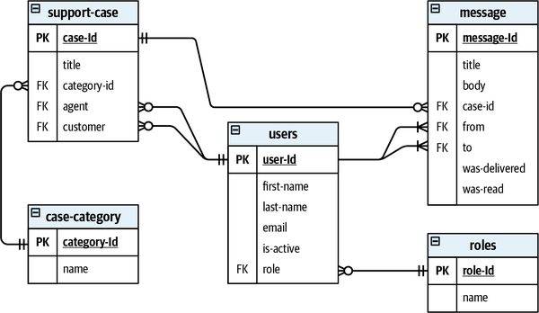
Analytical models are designed to provide different insights into the operational systems. Instead of implementing real-time transactions, an analytical model aims to provide insights into the performance of business activities and, more importantly, how the business can optimize its operations to achieve greater value.
From a data structure perspective, OLAP models ignore the individual business entities and instead focus on business activities by modeling fact tables and dimension tables. We’ll take a closer look at each of these tables next.
Facts represent business activities that have already happened. Facts are similar to the notion of domain events in the sense that both describe things that happened in the past. However, contrary to domain events, there is no stylistic requirement to name facts as verbs in the past tense. Still, facts represent activities of business processes. For example, a fact table Fact_CustomerOnboardings would contain a record for each new onboarded customer and Fact_Sales a record for each committed sale. Figure 16-2 shows an example of a fact table.
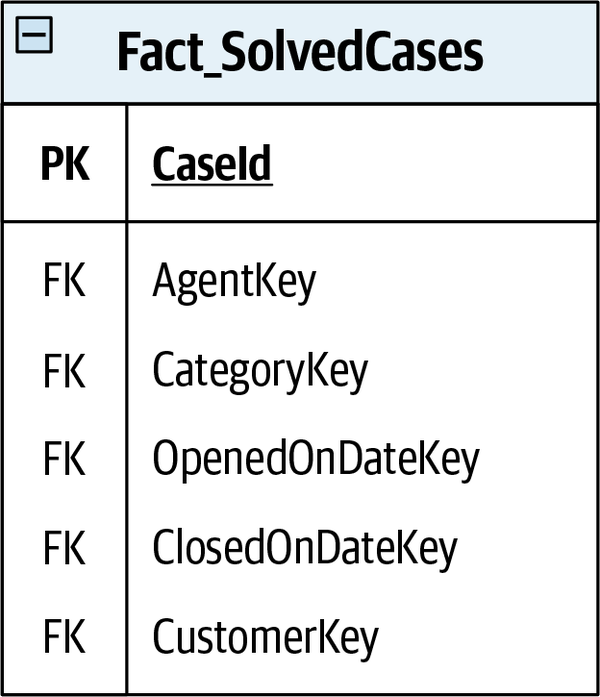
Also, similar to domain events, fact records are never deleted or modified: analytical data is append-only data: the only way to express that current data is outdated is to append a new record with the current state. Consider the fact table Fact_CaseStatus in Figure 16-3. It contains the measurements of the statuses of support requests through time. There is no explicit verb in the fact name, but the business process captured by the fact is the process of taking care of support cases.
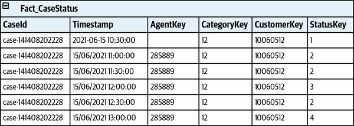
Another significant difference between the OLAP and OLTP models is the granularity of the data. Operational systems require the most precise data to handle business transactions. For analytical models, aggregated data is more efficient in many use cases. For example, in the Fact_CaseStatus table shown in Figure 16-3, you can see that the snapshots are taken every 30 minutes. The data analysts working with the model decide what level of granularity will best suit their needs. Creating a fact record for each change of the measurement—for example, each change of a case’s data—would be wasteful in some cases and even technically impossible in others.
Another essential building block of an analytical model is a dimension. If a fact represents a business process or action (a verb), a dimension describes the fact (an adjective).
The dimensions are designed to describe the facts’ attributes and are referenced as a foreign key from a fact table to a dimension table. The attributes modeled as dimensions are any measurements or data that is repeated across different fact records and cannot fit in a single column. For example, the schema in Figure 16-4 augments the SolvedCases fact with its dimensions.
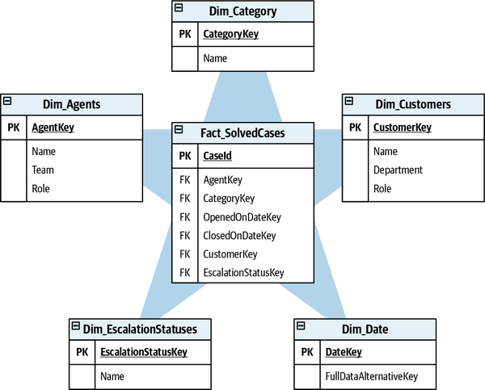
The reason for the high normalization of the dimensions is the analytical system’s need to support flexible querying. That’s another difference between operational and analytical models. It’s possible to predict how an operational model will be queried to support the business requirements. The querying patterns of the analytical models are not predictable. The data analysts need flexible ways of looking at the data, and it’s hard to predict what queries will be executed in the future. As a result, the normalization supports dynamic querying and filtering, and grouping the facts data across the different dimensions.
The table structure depicted in Figure 16-5 is called the star schema. It is based on the many-to-one relationships between the facts and their dimensions: each dimension record is used by many facts; a fact’s foreign key points to a single dimension record.
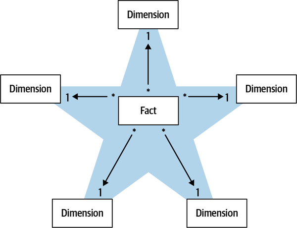
Another predominant analytical model is the snowflake schema. The snowflake schema is based on the same building blocks: facts and dimensions. However, in the snowflake schema, the dimensions are multilevel: each dimension is further normalized into more fine-grained dimensions, as shown in Figure 16-6.
As a result of the additional normalization, the snowflake schema will use less space to store the dimension data and is easier to maintain. However, querying the facts’ data will require joining more tables, and therefore, more computational resources are needed.
Both the star and snowflake schemas allow data analysts to analyze business performance, gaining insights into what can be optimized and built into business intelligence (BI) reports.
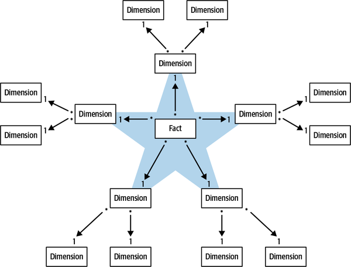
Let’s shift the discussion from analytical modeling to data management architectures that support generating and serving analytical data. In this section, we will discuss two common analytical data architectures: data warehouse and data lake. You will learn the basic working principles of each architecture, how they differ from each other, and the challenges of each approach. Knowledge of how the two architectures work will build the foundation for discussing the main topic of this chapter: the data mesh paradigm and its interplay with domain-driven design.
The data warehouse (DWH) architecture is relatively straightforward. Extract data from all of the enterprise’s operational systems, transform the source data into an analytical model, and load the resultant data into a data analysis–oriented database. This database is the data warehouse.
This data management architecture is based primarily on the extract-transform-load (ETL) scripts. The data can come from various sources: operational databases, streaming events, logs, and so on. In addition to translating the source data into a facts/dimensions-based model, the transformation step may include additional operations such as removing sensitive data, deduplicating records, reordering events, aggregating fine-grained events, and more. In some cases, the transformation may require temporary storage for the incoming data. This is known as the staging area.
The resultant data warehouse, shown in Figure 16-7, contains analytical data covering all of the enterprise’s business processes. The data is exposed using the SQL language (or one of its dialects) and is used by data analysts and BI engineers.
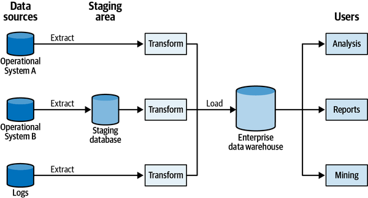
The careful reader will notice that the data warehouse architecture shares some of the challenges discussed in Chapters 2 and 3.
First, at the heart of the data warehouse architecture is the goal of building an enterprise-wide model. The model should describe the data produced by all of the enterprise’s systems and address all of the different use cases for analytical data. The analytical model enables, for example, optimizing the business, reducing operational costs, making intelligent business decisions, reporting, and even training ML models. As you learned in Chapter 3, such an approach is impractical for anything by the smallest organizations. Designing a model for the task at hand, such as building reports or training ML models, is a much more effective and scalable approach.
The challenge of building an all-encompassing model can be partly addressed by the use of data marts. A data mart is a database that holds data relevant for well-defined analytical needs, such as analysis of a single business department. In the data mart model shown in Figure 16-8, one mart is populated directly by an ETL process from an operational system, while another mart extracts its data from the data warehouse.
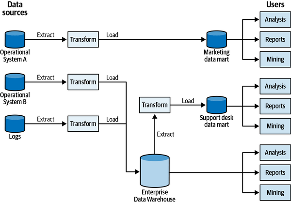
When the data is ingested into a data mart from the enterprise data warehouse, the enterprise-wide model still needs to be defined in the data warehouse. Alternatively, data marts can implement dedicated ETL processes to ingest data directly from the operational systems. In this case, the resultant model makes it challenging to query data across different marts—for example, across different departments—as it requires a cross-database query and significantly impacts performance.
Another challenging aspect of the data warehouse architecture is that the ETL processes create a strong coupling between the analytical (OLAP) and the operational (OLTP) systems. The data consumed by the ETL scripts is not necessarily exposed through the system’s public interfaces. Often, DWH systems simply fetch all the data residing in the operational systems’ databases. The schema used in the operational database is not a public interface, but rather an internal implementation detail. As a result, a slight change in the schema is destined to break the data warehouse’s ETL scripts. Since the operational and analytical systems are implemented and maintained by somewhat distant organizational units, the communication between the two is challenging and leads to lots of friction between the teams. This communication pattern is shown in Figure 16-9.
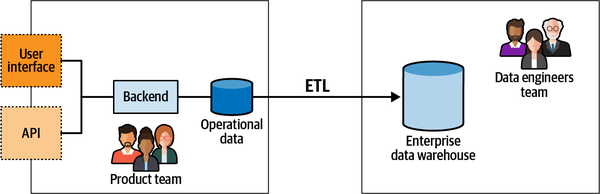
The data lake architecture addresses some of the shortcomings of the data warehouse architecture.
As a data warehouse, the data lake architecture is based on the same notion of ingesting the operational systems’ data and transforming it into an analytical model. However, there is a conceptual difference between the two approaches.
A data lake–based system ingests the operational systems’ data. However, instead of being transformed right away into an analytical model, the data is persisted in its raw form, that is, in the original operational model.
Eventually, the raw data cannot fit the needs of data analysts. As a result, it is the job of the data engineers and the BI engineers to make sense of the data in the lake and implement the ETL scripts that will generate analytical models and feed them into a data warehouse. Figure 16-10 depicts a data lake architecture.
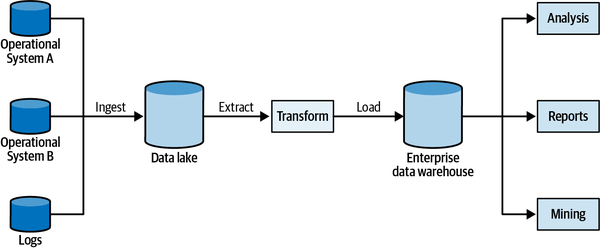
Since the operational systems’ data is persisted in its original, raw form and is transformed only afterward, the data lake allows working with multiple, task-oriented analytical models. One model can be used for reporting, another for training ML models, and so on. Furthermore, new models can be added in the future and initialized with the existing raw data.
That said, the delayed generation of analytical models increases the complexity of the overall system. It’s not uncommon for data engineers to implement and support multiple versions of the same ETL script to accommodate different versions of the operational model, as shown in Figure 16-11.
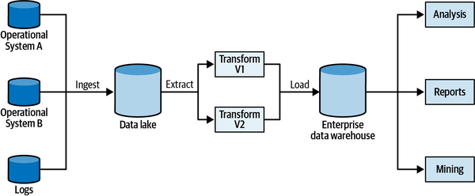
Furthermore, since data lakes are schema-less—there is no schema imposed on the incoming data—and there is no control over the quality of the incoming data, the data lake’s data becomes chaotic at certain levels of scale. Data lakes make it easy to ingest data but much more challenging to make use of it. Or, as is often said, a data lake becomes a data swamp. The data scientist’s job becomes orders of magnitude more complex to make sense of the chaos and to extract useful analytical data.
Both data warehouse and data lake architectures are based on the assumption that the more data that is ingested for analytics, the more insight the organization will gain. Both approaches, however, tend to break under the weight of “big” data. The transformation of operational to analytical models converges to thousands of unmaintainable, ad hoc ETL scripts at scale.
From a modeling perspective, both architectures trespass the boundaries of the operational systems and create dependencies on their implementation details. The resultant coupling to the implementation models creates friction between the operational and analytical systems teams, often to the point of preventing changes to the operational models for the sake of not breaking the analysis system’s ETL jobs.
To make matters worse, since the data analysts and data engineers belong to a separate organizational unit, they often lack the deep knowledge of the business domain possessed by the operational systems’ development teams. Instead of the knowledge of the business domain, they are specialized mainly in big data tooling.
Last but not least, the coupling to the implementation models is especially acute in domain-driven design–based projects, in which the emphasis is on continuously evolving and improving the business domain’s models. As a result, a change in the operational model can have unforeseen consequences in the analytical model. Such changes are frequent in DDD projects and often result in friction between R&D and data teams.
These limitations of data warehouses and data lakes inspired a new analytical data management architecture: data mesh.
The data mesh architecture is, in a sense, domain-driven design for analytical data. As the different patterns of DDD draw boundaries and protect their contents, the data mesh architecture defines and protects model and ownership boundaries for analytical data.
The data mesh architecture is based on four core principles: decompose data around domains, data as a product, enable autonomy, and build an ecosystem. Let’s discuss each principle in detail.
Both the data warehouse and data lake approaches aim to unify all of the enterprise’s data into one big model. The resultant analytical model is ineffective for all the same reasons as an enterprise-wide operational model is. Furthermore, gathering data from all systems into one location blurs the ownership boundaries of the various data elements.
Instead of building a monolithic analytical model, the data mesh architecture calls for leveraging the same solution we discussed in Chapter 3 for operational data: use multiple analytical models and align them with the origin of the data. This naturally aligns the ownership boundaries of the analytical models with the bounded contexts’ boundaries, as shown in Figure 16-12. When the analysis model is decomposed according to the system’s bounded contexts, the generation of the analysis data becomes the responsibility of the corresponding product teams.
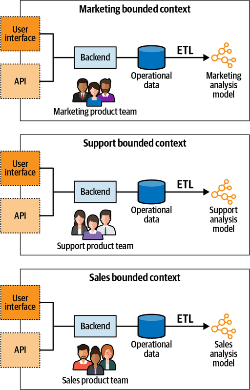
Each bounded context now owns its operational (OLTP) and analytical (OLAP) models. Consequently, the same team owns the operational model, now in charge of transforming it into the analytical model.
The classic data management architectures make it difficult to discover, understand, and fetch quality analytical data. This is especially acute in the case of data lakes.
The data as a product principle calls for treating the analytical data as a first-class citizen. Instead of the analytical systems having to get the operational data from dubious sources (internal database, logfiles, etc.), in a data mesh–based system the bounded contexts serve the analytical data through well-defined output ports, as shown in Figure 16-13.
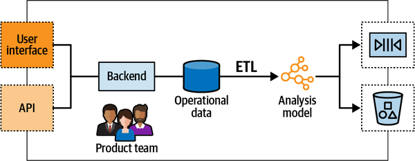
Analytical data should be treated the same as any public API:
It should be easy to discover the necessary endpoints: the data output ports.
The analytical endpoints should have a well-defined schema describing the served data and its format.
The analytical data should be trustworthy, and as with any API, it should have defined and monitored service-level agreements (SLAs).
The analytical model should be versioned as a regular API and correspondingly manage integration-breaking changes in the model.
Furthermore, since the analytical data is treated as a product, it has to address the needs of its consumers. The bounded context’s team is in charge of ensuring that the resultant model addresses the needs of its consumers. Contrary to the data warehouse and data lake architectures, with data mesh, accountability for data quality is a top-level concern.
The goal of the distributed data management architecture is to allow the fine-grained analytical models to be combined to address the organization’s data analysis needs. For example, if a BI report should reflect data from multiple bounded contexts, it should be able to easily fetch their analytical data if needed, apply local transformations, and produce the report.
Finally, different consumers may require the analytical data in different forms. Some may prefer to execute SQL queries, others to fetch analytical data from an object storage service, and so on. As a result, the data products have to be polyglot, serving the data in formats that suit different consumers’ needs.
To implement the data as a product principle, product teams require adding data-oriented specialists. That’s the missing piece in the cross-functional teams puzzle, which traditionally includes only specialists related to the operational systems.
The product teams should be able to both create their own data products and consume data products served by other bounded contexts. Just as in the case of bounded contexts, the data products should be interoperable.
It would be wasteful, inefficient, and hard to integrate if each team builds their own solution for serving analytical data. To prevent this from happening, a platform is needed to abstract the complexity of building, executing, and maintaining interoperable data products. Designing and building such a platform is a considerable undertaking and requires a dedicated data infrastructure platform team.
The data infrastructure platform team should be in charge of defining the data product blueprints, unified access patterns, access control, and polyglot storage that can be leveraged by product teams, as well as monitoring the platform and ensuring that the SLAs and objectives are met.
The final step to creating a data mesh system is to appoint a federated governance body to enable interoperability and ecosystem thinking in the domain of the analytical data. Typically, that would be a group consisting of the bounded contexts’ data and product owners and representatives of the data infrastructure platform team, as shown in Figure 16-14.
The governance group is in charge of defining the rules to ensure a healthy and interoperable ecosystem. The rules have to be applied to all data products and their interfaces, and it’s the group’s responsibility to ensure adherence to the rules throughout the enterprise.
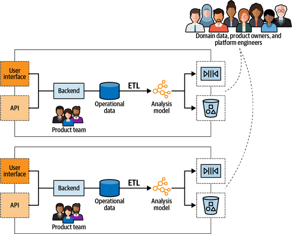
These are the four principles that the data mesh architecture is based on. The emphasis on defining boundaries, and encapsulating the implementation details behind well-defined output ports, makes it evident that the data mesh architecture is based on the same reasoning as domain-driven design. Furthermore, some of the domain-driven design patterns can greatly support implementing the data mesh architecture.
First and foremost, the ubiquitous language and the resultant domain knowledge are essential for designing analytical models. As we discussed in the data warehouse and data lake sections, domain knowledge is lacking in traditional architectures.
Second, exposing a bounded context’s data in a model that is different from its operational model is the open-host pattern. In this case, the analytical model is an additional published language.
The CQRS pattern makes it easy to generate multiple models of the same data. It can be leveraged to transform the operational model into an analytical model. The CQRS pattern’s ability to generate models from scratch makes it easy to generate and serve multiple versions of the analytical model simultaneously, as shown in Figure 16-15.
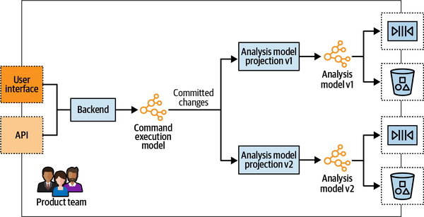
Finally, since the data mesh architecture combines the different bounded contexts’ models to implement analytical use cases, the bounded context integration patterns for operational models apply for analytical models as well. Two product teams can evolve their analytical models in partnership. Another can implement an anticorruption layer to protect itself from an ineffective analytical model. Or, on the other hand, the teams can go their separate ways and produce duplicate implementations of analytical models.
In this chapter, you learned the different aspects of designing software systems, in particular, defining and managing analytical data. We discussed the predominant models for analytical data, including the star and snowflake schemas, and how the data is traditionally managed in data warehouses and data lakes.
The data mesh architecture aims to address the challenges of the traditional data management architectures. At its core, it applies the same principles as domain-driven design but to analytical data: decomposing the analytical model into manageable units and ensuring that the analytical data can be reliably accessed and used through its public interfaces. Ultimately, the CQRS and bounded context integration patterns can support implementing the data mesh architecture.
Which of the following statements are correct regarding the differences between transactional (OLTP) and analytical (OLAP) models? Select all that apply.
OLAP models should expose more flexible querying options than OLTP models.
OLAP models are expected to undergo more updates than OLTP models, and thus have to be optimized for writes.
OLTP data is optimized for real-time operations, whereas it’s acceptable to wait seconds or even minutes for an OLAP query’s response.
Which bounded context integration pattern is essential for implementation of the data mesh architecture?
Shared kernel
Open-host service
Anticorruption layer
Partnership
Which architectural pattern is essential for implementation of the data mesh architecture?
Layered architecture
Ports and adapters
CQRS
Architectural patterns cannot support implementation of an OLAP model.
The definition of data mesh architecture calls for decomposing data around “domains.” What is DDD’s term for denoting the data mesh’s domains?
Bounded contexts
Business domains
Subdomains
There is no synonym for a data mesh’s domains in DDD.